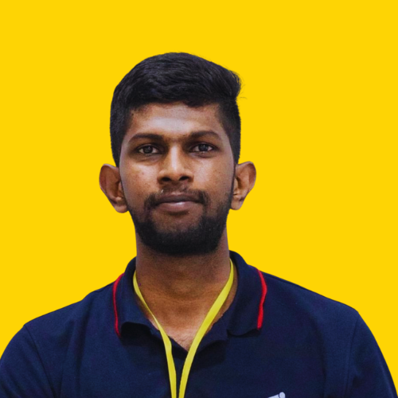

Assistive Robot for Elderly Individuals with Sarcopenia
An autonomous robot for safe transfer assistance and continuous health monitoring.
PhD Candidate at Singapore Management University
I study how robots and people can work together safely and naturally. My background is in mechatronics engineering, so I like to work across the whole system: hardware, perception, control and the people who use it.

How people perceive, trust and work alongside robots in everyday and assistive settings.
Robots that support older adults and people with visual impairments, such as robotic guide dogs and transfer-assist systems.
Perception, localization and control for mobile and underwater robots, built on machine learning.
An autonomous robot for safe transfer assistance and continuous health monitoring.

An autonomous underwater vehicle built for SAUVC. It placed 11th out of 86+ teams worldwide.
See more →
A wearable belt with sensors that guides blind people safely using haptic feedback.
See more →I'm open to research collaborations, talks and conversations about HRI.